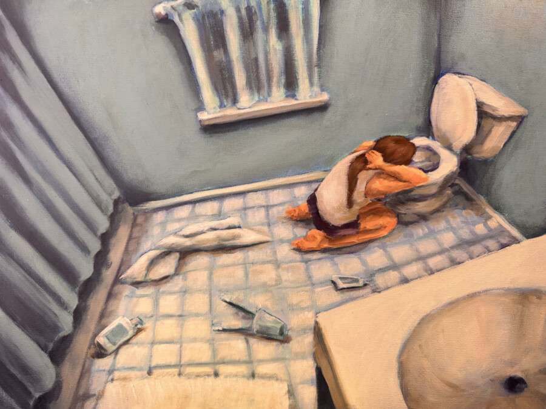

RBHS AP Art Exhibition
The Riverside Arts Center’s Freeark Gallery and Riverside Brookfield High School are pleased to present the 16th annual presentation of exceptional artworks made by students enrolled in RBHS’s Advanced Placement Art class. This group exhibition includes painting, sculpture, drawing, photography, and digital art by students in their sophomore, junior, and senior years.
The exhibition is on view for four weeks, from March 13th through April 11th. Please celebrate the creativity of our community’s young artists by joining us for a reception on the evening of Friday March 13th from 5:00 – 7:00 PM. Light refreshments will be served.
Opening Reception: Friday, March 13, 2026, 5:00 – 7:00 pm
Pizzas generously donated by Paisans Pizzeria of Brookfield
Exhibition Dates: March 13 – April 11, 2026
Gallery Hours: Thursdays, Fridays, and Saturdays, 1:00 – 5:00 pm
Riverside Arts Center
32 E Quincy St